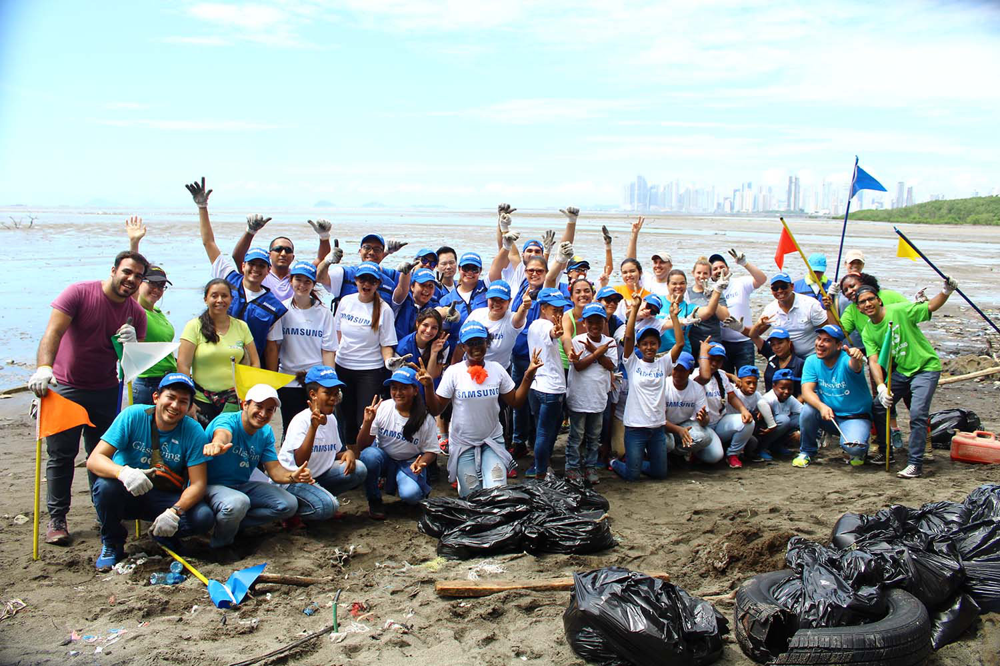
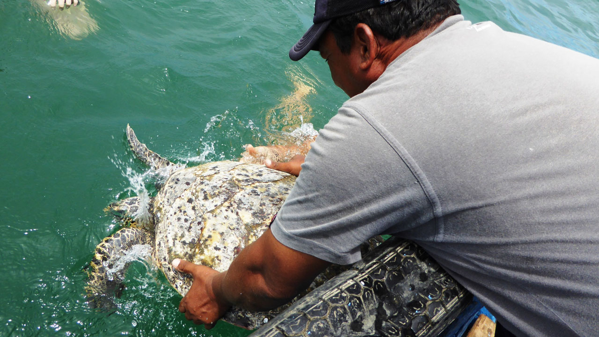

Limpieza de playas
Jornadas de recolección de residuos en la costa para cuidar la fauna marina y mantener limpias nuestras playas.
Leer másDescubrí cada proyecto.

Jornadas de recolección de residuos en la costa para cuidar la fauna marina y mantener limpias nuestras playas.
Leer más
Charlas y talleres para escuelas y comunidades que fomentan hábitos sustentables y protección del mar.
Leer más
Atendemos animales marinos heridos y coordinamos su rehabilitación para devolverlos al hábitat seguro.
Leer más
Formamos alianzas con empresas y vecinos para sumar recursos, apoyo logístico y difusión ambiental.
Leer más